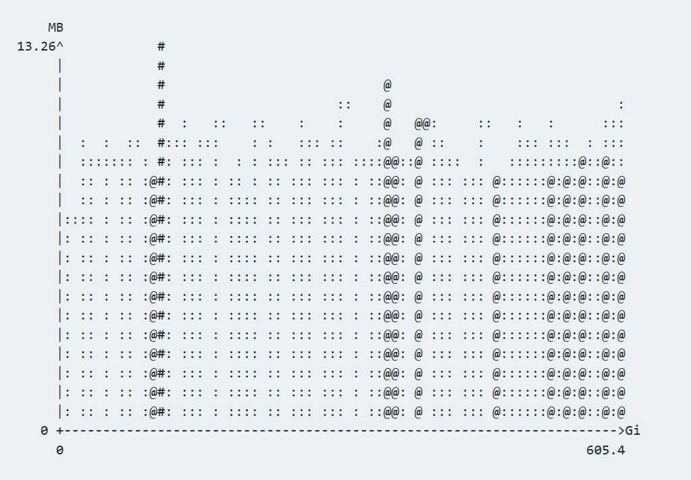
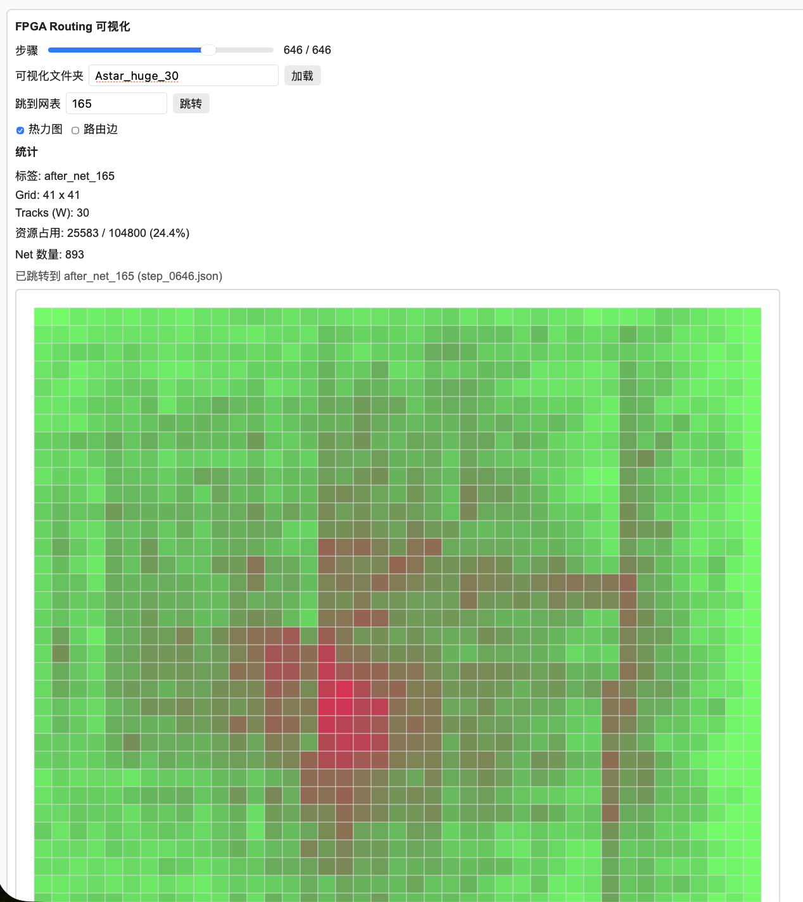
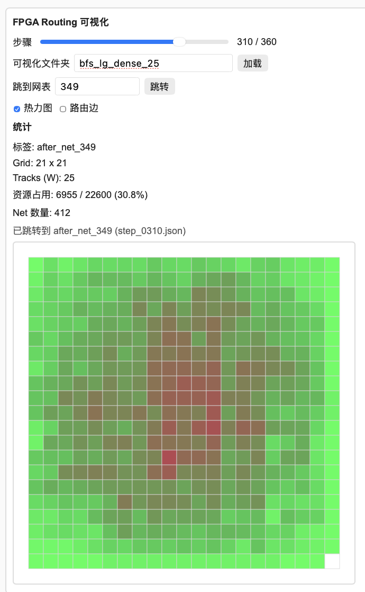
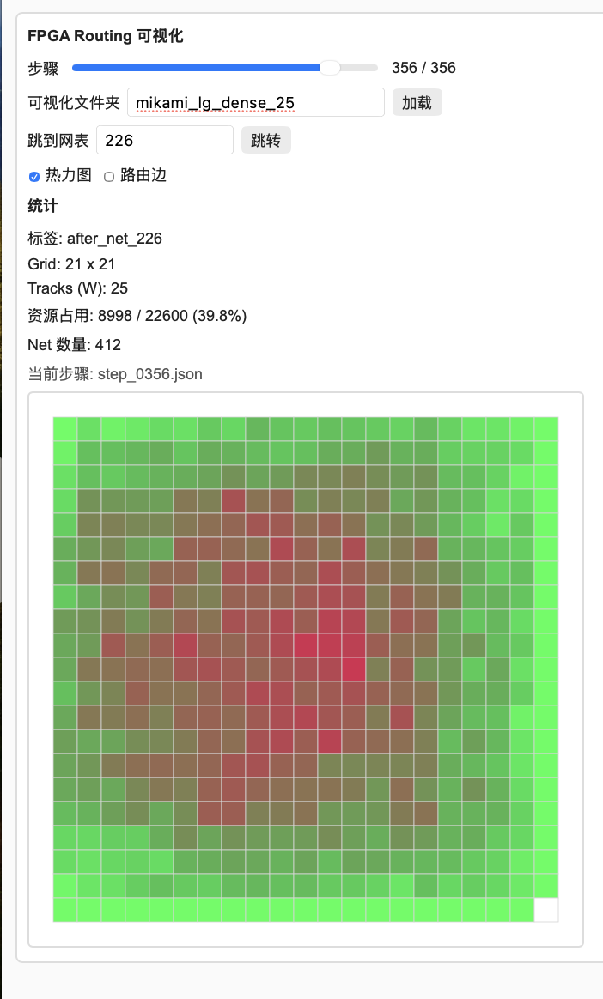
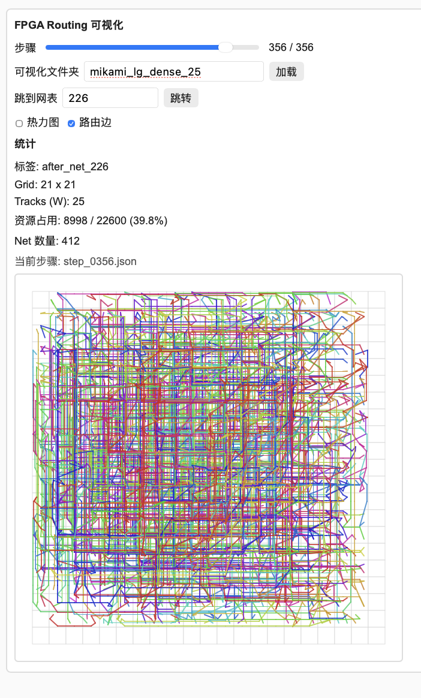
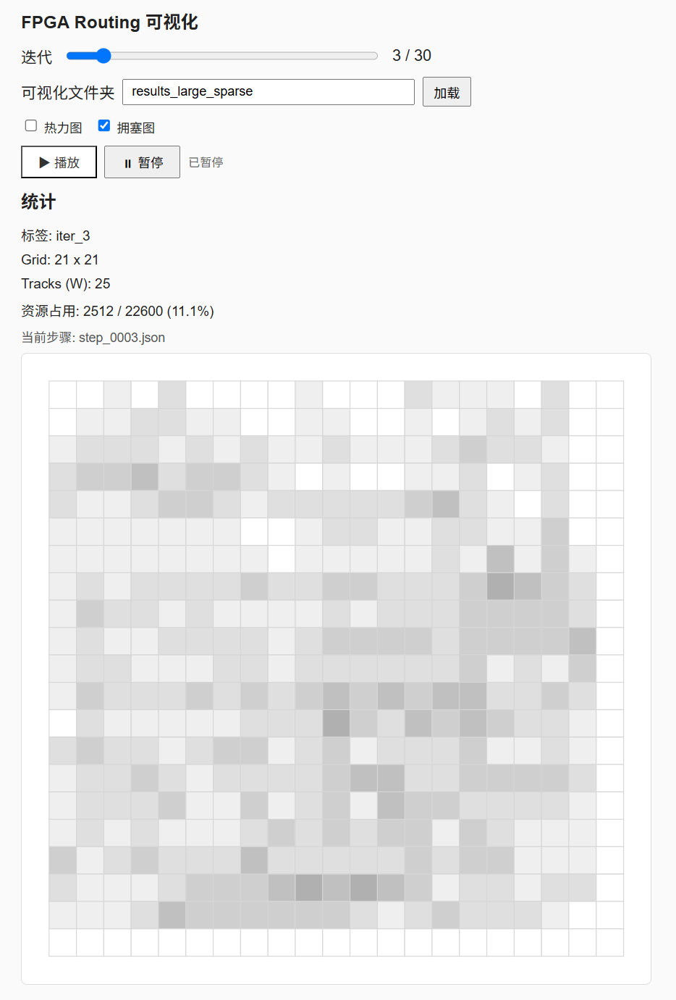
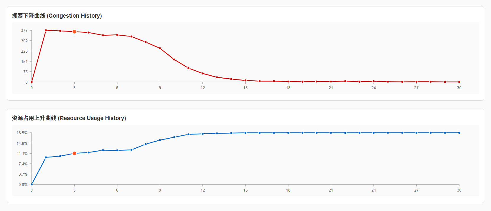

FPGA Negotiated Router
from global to parallel detailed routing
FPGA 协商布线器
从全局布线到并行详细布线
A from-scratch C++17 routing engine that decomposes multi-terminal nets with Kruskal MST, routes them with BFS / A* / Mikami-Tabuchi, and removes congestion with a parallel PathFinder negotiated router driven by OpenMP. 一个从零实现的 C++17 布线引擎：用 Kruskal 最小生成树拆分多端线网，以 BFS / A* / Mikami-Tabuchi 完成详细布线，并通过 OpenMP 并行的 PathFinder 协商布线消除拥塞。
Course site: customized-computing.github.io/VLSI-FPGA 课程主页：customized-computing.github.io/VLSI-FPGA
Interactive routing visualization交互式布线可视化
Replay sampled negotiated-routing states for three scenarios. Pick a scenario, drag the step slider or press play, and switch between the occupancy heatmap and the congestion map. The curves below the grid track congestion and resource usage over the iterations. 回放三个场景的协商布线抽样状态。选择场景、拖动步骤滑条或点击播放，并在“热力图 / 拥塞图”之间切换。网格下方的曲线跟踪迭代过程中的拥塞与资源占用。
Heatmap mode热力图模式
Each tile is colored by occupancy / capacity. Low usage → deep blue; rising usage → blue → purple → magenta; near-full tiles → red/pink.
每个 tile 按 占用 / 容量 着色。低占用为深蓝，随占用升高依次为蓝 → 紫 → 品红，接近占满为红/粉。
Congestion mode拥塞图模式
Each tile is colored by its congestion ratio. No overflow → dark; increasing overflow → amber → red. Red hotspots are the conflict points negotiation must resolve.
每个 tile 按拥塞比例着色。无溢出为深色，溢出升高依次为琥珀 → 红。红色热点即协商布线需要化解的冲突点。
The viewer loads sampled states from docs/data/*.json; the grid cell is one tile and the two line charts are colored magenta (congestion) and cyan (resource usage).
查看器从 docs/data/*.json 加载抽样状态；网格每格为一个 tile，两条折线分别以品红（拥塞）和青色（资源占用）绘制。
Background & RR-graph modeling项目背景与 RR graph 建模
The FPGA is modeled as an N×N tile grid. Each tile hosts a routing-resource (RR) graph whose nodes are wire segments and logic pins, and whose edges are programmable switches. Routing assigns every net to a set of non-conflicting RR nodes. FPGA 被建模为 N×N 的 tile 网格。每个 tile 内是一张布线资源（RR）图：节点是导线段与逻辑引脚，边是可编程开关。布线为每条线网分配一组互不冲突的 RR 节点。
H_WIRE
Horizontal wire segment inside a tile — a horizontal routing resource.
tile 内的水平导线段，表示一条水平方向的布线资源。
rrTypeV_WIRE
Vertical wire segment inside a tile — a vertical routing resource.
tile 内的垂直导线段，表示一条垂直方向的布线资源。
rrTypeCB_WIRE
Connection-block / logic pin — the entry and exit point of a net.
连接块与逻辑引脚，是线网的入口与出口。
rrTypeRouting flow布线流程
- Global routing全局布线
- sortNets()
- Net decomposition线网拆分
- Kruskal MST
- Detailed routing详细布线
- BFS / A* / Mikami-Tabuchi
- Congestion removal拥塞消除
- NegotiatedRouter (PathFinder)
- Parallelism并行化
- OpenMP route-in-parallel, commit-in-serial
Algorithm building blocks算法模块
Each stage is implemented independently and can be inspected in isolation, from graph decomposition to the congestion-aware negotiated cost function. Follow each card for the full principle, pseudocode and complexity. 每个阶段都独立实现、可单独检查：从图分解，到拥塞感知的协商代价函数。点击卡片可查看完整原理、伪代码与复杂度。
Global routing · sortNets全局布线 · sortNets
Sort nets in ascending order by the number of global pins inside their bounding box, so that tightly-bounded nets are routed first.
按线网 bounding box 内全局引脚数升序排序，让约束更紧的线网先布线。
O(n log n)Kruskal MST decompositionKruskal MST 拆分
Decompose each multi-terminal net into two-terminal segments by building a minimum spanning tree with Manhattan-distance edge weights.
以 Manhattan 距离为边权构建最小生成树，将多端线网拆成两两连接的线段。
union-findBFS detail routingBFS 详细布线
Breadth-first search on the RR graph finds a shortest-hop path, used as the backward-compatible default (my → bfs).
在 RR 图上做广度优先搜索，得到跳数最短路径；作为向后兼容的默认方法（my → bfs）。
A* detail routingA* 详细布线
A* search guided by a Manhattan-distance heuristic with a closed set; optimal for each two-terminal pair.
使用 Manhattan 启发式与 closed 集的 A*，对单个两端问题最优。
a* ≡ astarMikami-TabuchiMikami-Tabuchi
A double-end line-search that expands by node type (H_WIRE / V_WIRE / CB_WIRE), giving short wires and strong scaling on large designs.
按节点类型（H_WIRE / V_WIRE / CB_WIRE）扩展的双端线搜索，线长更短，在大规模设计上扩展性更好。
double-endPathFinder + OpenMPPathFinder + OpenMP
Negotiated routing with cost cost(v,t) = (1+h(v))·p(v,t)·(1+0.1t). Nets are routed in parallel and committed serially.
协商布线采用代价 cost(v,t) = (1+h(v))·p(v,t)·(1+0.1t)；线网并行路由、串行提交。
Experiment results实验结果
| benchmark | method方法 | connected / total成功连接/总连接 | Segments | verify验证 | time (s)耗时(s) |
|---|---|---|---|---|---|
| lg_sparse | bfs | 338/338 | 4056 | passed通过 | 1 |
| lg_sparse | astar | 338/338 | 4067 | passed通过 | 1 |
| lg_sparse | mikami | 338/338 | 4062 | passed通过 | 1 |
| large_dense | bfs | 1028/1028 | 11939 | passed通过 | 3 |
| large_dense | astar | 1028/1028 | 11968 | passed通过 | 2 |
| large_dense | mikami | 1028/1028 | 11945 | passed通过 | 2 |
| huge | bfs | 2307/2307 | 46819 | passed通过 | 37 |
| huge | astar | 2307/2307 | 46928 | passed通过 | 23 |
| huge | mikami | 2307/2307 | 46769 | passed通过 | 22 |
All three methods complete and verify on the three benchmarks, with wire-length differences < 1.5%. On huge, mikami is the fastest and yields the shortest wire length.
三种方法在三个 benchmark 上均完成并验证通过，线长差异 < 1.5%。在 huge 上，mikami 最快且线长最短。
| method方法 | connected / total成功连接/总连接 | Segments | verify验证 | time (s)耗时(s) |
|---|---|---|---|---|
| bfs | 1028/1028 | 12043 | passed通过 | 6 |
| astar | 1028/1028 | 12180 | passed通过 | 1 |
| mikami | 1028/1028 | 12105 | passed通过 | 1 |
All three detail routers complete and verify at the tighter W = 25. The separate negotiated engine still does not converge on large_dense at W = 25 (table E).
三种详细布线器在更紧的 W = 25 下均完成并验证通过。独立的协商布线引擎在 large_dense W = 25 下仍未收敛（见表 E）。
| W | converged收敛 | iterations迭代 | Segments | verify验证 | time (s)耗时(s) |
|---|---|---|---|---|---|
| 30 | ✅ | 39 | 2960 | passed通过 | 3 |
| 25 | ✅ | 35 | 2970 | passed通过 | 3 |
| 20 | ❌ | 50 | 2940 | not complete | 3 |
The critical channel width lies between W = 20 and W = 25. 临界通道宽度位于 W = 20–25 之间。
| threads线程数 | iterations迭代 | time (s)耗时(s) | speedup vs 4t相对 4 线程加速 | Segments | verify验证 |
|---|---|---|---|---|---|
| 4 | 35 | 7 | 1.00× | 2970 | passed通过 |
| 8 | 35 | 4 | 1.75× | 2970 | passed通过 |
| 16 | 35 | 3 | 2.33× | 2970 | passed通过 |
Iteration count and solution quality (Segments = 2970) are identical across thread counts: parallelism does not change the result. Speedup is sub-linear (serial commit / Amdahl): 16 threads reach ~2.33× over 4 threads. 各线程数下迭代数与解质量（Segments = 2970）完全一致，说明并行不改变结果。加速比低于线性（受串行提交 / Amdahl 限制）：16 线程相对 4 线程约 2.33×。
| benchmark | W | converged收敛 | iters迭代 | final congested nodes最终拥塞节点 | Segments | verify验证 | time (s)耗时(s) |
|---|---|---|---|---|---|---|---|
| lg_sparse | 30 | ✅ | 20 | 0 | 4176 | passed通过 | 4 |
| lg_sparse | 25 | ✅ | 29 | 0 | 4181 | passed通过 | 6 |
| large_dense | 30 | ❌ | 50 | 170 | 12200 | not complete | 35 |
| large_dense | 25 | ❌ | 50 | 420 | 11949 | not complete | 31 |
| huge | 30 | ❌ | 50 | 431 | 48370 | not complete | 423 |
| huge | 25 | ❌ | 50 | 1202 | 47771 | not complete | 477 |
Only lg_sparse converges. For large_dense, W = 30 reduces congestion versus W = 25 (170 vs 420 nodes) but is still insufficient within 50 iterations; huge does not converge in either case.
仅 lg_sparse 收敛。large_dense 在 W = 30 时拥塞较 W = 25 明显改善（170 vs 420），但 50 轮内仍不足；huge 两种情况均不收敛。
Memory analysis内存分析

Heap usage during negotiated routing on med_dense (W = 25, 16 threads). med_dense 协商布线期间的堆内存占用（W = 25，16 线程）。
Massif summaryMassif 结论
- Peak memory峰值内存
- 13.26 MB
- Final memory最终内存
- 10.67 MB
- Useful heap有用堆
- 8.72 MB
- Extra overhead额外开销
- 1.94 MB
Repository structure仓库结构
# core router sources main.cpp # CLI entry & runtime dispatch Solution.h / .cpp # MyRouter: sortNets, MST, BFS/A*/Mikami NegotiatedRouter.cpp # PathFinder + OpenMP Design / FPGA / FpgaTile / RRNode / Net vistual/VisualizationDump.cpp # step JSON dumper # benchmarks benchmark/ # tiny … huge, xl # experiments scripts/run_experiments.sh # → test_logs/*.log scripts/parse_results.py # → experiment_results.json experiment_summary.md experiment_results.json # GitHub Pages site docs/ # this page ├── index.html ├── algorithms.html # algorithm principles ├── styles.css ├── app.js ├── assets/ # 7 PNG figures └── data/ # huge / large_dense / large_sparse.json
# 路由器核心源码 main.cpp # 入口与运行时参数分派 Solution.h / .cpp # MyRouter：sortNets、MST、BFS/A*/Mikami NegotiatedRouter.cpp # PathFinder + OpenMP Design / FPGA / FpgaTile / RRNode / Net vistual/VisualizationDump.cpp # 逐步 JSON dump # benchmark benchmark/ # tiny … huge, xl # 实验脚本与结果 scripts/run_experiments.sh # → test_logs/*.log scripts/parse_results.py # → experiment_results.json experiment_summary.md experiment_results.json # GitHub Pages 静态站 docs/ # 本页面 ├── index.html ├── algorithms.html # 算法原理 ├── styles.css ├── app.js ├── assets/ # 7 张 PNG 图 └── data/ # huge / large_dense / large_sparse.json
Build & run构建与运行
Build with CMake, then select the router type at runtime. visual defaults to false.
使用 CMake 构建，运行时选择路由器类型。visual 默认为 false。
# build cmake -S . -B build && cmake --build build -j # usage ./build/main <circuit> <W> [out_dir] [router_type] [maxiter] [threads] [visual] # detail routing ./build/main ./benchmark/huge 30 out bfs # alias: my ./build/main ./benchmark/huge 30 out astar # alias: a* ./build/main ./benchmark/huge 30 out mikami # negotiated routing ./build/main ./benchmark/med_dense 25 out negotiated 50 16 false # reproduce the experiment bash scripts/run_experiments.sh # → test_logs/*.log python3 scripts/parse_results.py # → experiment_results.json
| argument参数 | meaning含义 | default默认 |
|---|---|---|
| circuit | benchmark file pathbenchmark 文件路径 | — |
| W | routing channel width布线通道宽度 | — |
| out_dir | output directory输出目录 | annual_results |
| router_type | bfs | my · astar | a* · mikami · negotiatedbfs | my · astar | a* · mikami · negotiated | bfs |
| maxiter | max negotiated iterations协商布线最大迭代次数 | 30 |
| threads | OpenMP threads (negotiated only)OpenMP 线程数（仅协商） | 4 |
| visual | write step JSON (negotiated only)输出逐步 JSON（仅协商） | false |
Figure gallery图库
Congestion and routing views captured during debugging. 调试过程中捕获的拥塞与路由视图。

Congestion heatmap around a routed net on the 41×41
huge benchmark.
41×41 huge benchmark 上某条线网周围的拥塞热力图。

Congestion heatmap of BFS detail routing on a dense 21×21 design. BFS 详细布线在密集 21×21 设计上的拥塞热力图。

Congestion heatmap for the Mikami-Tabuchi double-end search. Mikami-Tabuchi 双端线搜索的拥塞热力图。

The same scenario, showing individual routing-edge detail. 同一场景，展示具体的路由边细节。

Per-iteration congestion distribution of the parallel PathFinder router. 并行 PathFinder 协商布线的逐迭代拥塞分布。

Congestion decreasing over iterations as historical cost pushes nets apart. 随着历史代价把线网"推开"，拥塞随迭代逐步下降。